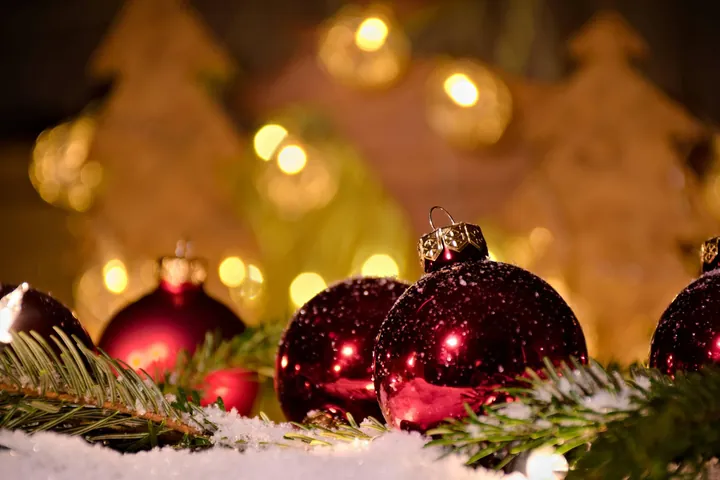

da ven 20 nov a mer 6 gen
Natale a Peschiera del Garda
Peschiera del Garda si prepara a vivere la magia del Natale, trasformando il centro storico e i suoi luoghi più caratteristici in uno scenario suggestivo, tra luci, tradizioni e momenti di convivialità.
 Indicazioni
Indicazioni
- Costi e prenotazioni
- Costo non indicato · Prenotazione non indicata
- Programma
- Programma da verificare. Apri la fonte ufficiale per orari e possibili aggiornamenti.
- In caso di maltempo
- Nessuna indicazione specifica pubblicata.
- Note
- Acquisito automaticamente dalla fonte.
L’EVENTO
Descrizione completa
Peschiera del Garda si prepara a vivere la magia del Natale, trasformando il centro storico e i suoi luoghi più caratteristici in uno scenario suggestivo, tra luci, tradizioni e momenti di convivialità.
Le vie e le piazze della città si animano con le luminarie natalizie e le atmosfere delle feste. Il Villaggio di Natale in Piazza Ferdinando di Savoia accoglie visitatori e residenti, mentre l'appuntamento "Incanto di Luci" al Parco Catullo contribuisce a rendere ancora più suggestiva l'atmosfera natalizia. Non mancano i mercatini di Natale , con proposte solidali, idee regalo e iniziative a sostegno della ricerca sulla fibrosi cistica. Tra gli allestimenti più caratteristici spicca il tradizionale Presepe Subacqueo nel Canale di Mezzo , affiancato da altre esposizioni di presepi artistici che arricchiscono gli scorci della città.
Il periodo delle festività è accompagnato da numerose occasioni di intrattenimento per grandi e piccoli, tra celebrazioni dedicate a Santa Lucia, esibizioni di cori natalizi e appuntamenti musicali. L'atmosfera di festa prosegue anche durante il passaggio al nuovo anno, con una serata di Capodanno animata da DJ set nelle piazze cittadine, per continuare con il Concerto di Capodanno dei Damavoci Gospel Singers e il Grande Concerto dell'Epifania , accompagnato dall'atteso arrivo della Befana.
Un'occasione per scoprire Peschiera del Garda nella sua veste natalizia e lasciarsi coinvolgere dal fascino delle festività, tra musica, tradizioni, solidarietà e momenti da condividere.
Per conoscere tutte le iniziative, le date e gli orari degli appuntamenti, consulta il programma completo!
IL PROGRAMMA
Programma e orari
Appuntamenti raccolti dalle fonti elencate. Dove manca un orario, non è ancora disponibile in questa scheda.
Programma pubblicato
- 2026-11-20 — 2027-01-06 ·
INFORMAZIONI UTILI
Prima di partire
- Controllare la fonte prima di partire.
ORGANIZZAZIONE